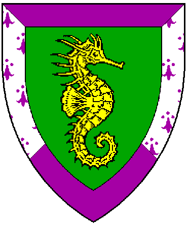
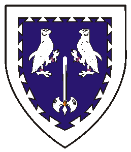
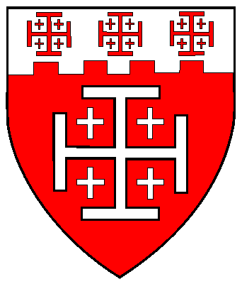
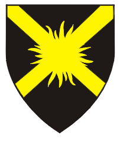
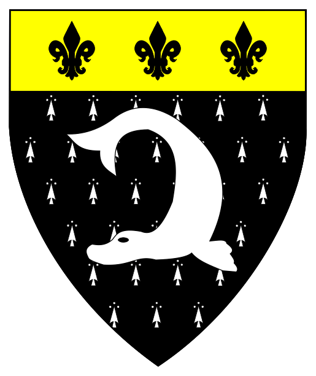
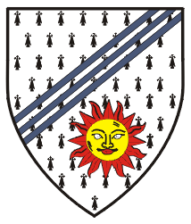
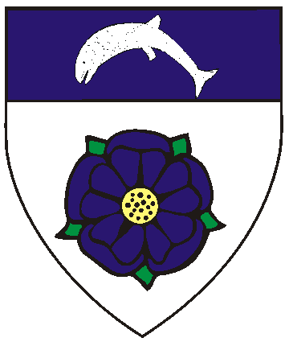
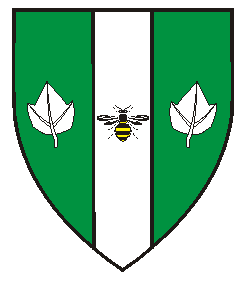

The Oertha Armorial
Awards of Arms (Simple Order of Precedence)
AA's Part IV
Updated 6/05/24
Anyone with the following:
has no arms registered with the College of Arms
Anyone with this border:
Most of the information herein is based on the West Kingdom Order of Precedence,
Red Kendall 
May 31, AS XXXII (1997) by Viresse & Astrin 
May, XXXIII (1998) 
February 27, AS XXXIII (1999) 
March 6, AS XXXIII (1999)   Sepember 9, AS XXXV (2000) by Magnus & Esperanza 
December 8, AS XXXVI (2001) by Magnus & Esperanza 
January 20, AS XXXVII (2002) by Magnus and Esperanza
To the Royal Peers
To the Patents (Knight, Laurel, Pelican)
To the Grants of Arms, Leaves of Achievement, and Court Baronies
Awards of Arms Part IV
To the AA's Part V
To the AA's Part VI
To the AA's Part VII
Emblazons marked with "RR" involve artwork of Robert Rootes,

Blazons without visual shield/designs are in the works.
has their AA but are not in the official Order of Precedence
or the O.P.'s of other Kingdoms.
Contact me to forward corrections or with name/spelling preferences.
AWARDS OF ARMS
Armigers of Oertha (continued)
January AS XXXI (1997)
the Reign of Viresse' & Astrin
through January A.S. XXXV (2002)
the Reign of Magnus and Esperanza
(Deceased)
Apr 26, AS XXXI (1997) by Viresse & Astrin
Brokk Gralbarda (aka Brock [of Oertha])
(Deceased)
Apr 26, AS XXXI (1997) by Viresse & Astrin
Catherine Willoughby
(aka April MacMorn)
May 25, XXXII (1997) by Viresse & Astrin
Patrick Willoughby
(aka Patrick MacMorn)
May 25, XXXII (1997) by Viresse & Astrin
Bards of Oertha, Order of the (#14) April 21, AS LVIII (2024) by Hans & Elena
Rebecca fitzRobert
Vert, a natural sea-horse contourny Or, a bordure per saltire purpure and argent ermined purpure.
Gyre Ironthumbs (aka Gyre the Silent)
June 21, AS XXXII (1997) by Viresse & Astrin
Olivia du Chat of Lion's Keep
July 5, AS XXXII (1997) by Viresse & Astrin
Katlin Louisa de Navarre
July 5, AS XXXII (1997) by Viresse & Astrin
Bronwyn Elari of Cardiff
December 1, AS XXXII (1997) by Nicholaus & Allysia
Gaemas
December 6, AS XXXII (1997) by Uther & Tanwen
Conn MacAirt
December 6, AS XXXII (1997) by Uther & Tanwen
Conandil Glass
December 6, AS XXXII (1997) by Uther & Tanwen
Seobhan Irvin of Drum
January 18, AS XXXII (1998) by Nicholaus & Alyssia
Richart von Schlagen
May 9, AS XXXIII (1998) by Georg & Katarzina
Havoc atte Ree (Hafoc)
Azure, two hawks respectant and a double-bitted axe
inverted within a bordure dovetailed argent
by Georg & Katarzina
Briana of Winter's Gate
July 18, AS XXXIII (1998) by Georg & Katarzina
Alvon O'Masse
July 18, AS XXXIII (1998) by Georg & Katarzina
Allen McGregor
Jul 19, AS XXXIII (1998) by Haouc & Etaine
Maurella Alva McGregor
February 27, AS XXXIII (1999) by Georg & Katarzina
Robert Cornelius MacGregor
Gules, a cross of Jerusalem,
on a chief embattled argent three crosses of Jerusalem gules.
Meridies
Conal Calqahoun
March 6, AS XXXIII (1999)
by Georg & Katarzina
Larentius VonSilenen
Sable, a saltire radiant Or
by Georg & Katarzina
Shana of Winter's Gate
March 6, AS XXXIII (1999)
by Georg & Katarzina
Rónán of Winter's Gate
Counter-ermine, a seal naiant, its tail reflexed above its head argent,
on a chief Or three fleur de lys sable.
December 4, A.S. XXIX (1999)
by John & Gabriel, King and Queen of the West.
Benjamin of Winter's Gate
July 15, AS XXXV (2000) by Alfonso & Cedrin
Jaclyn of Winter's Gate
July 15, AS XXXV (2000) by Alfonso & Cedrin
Ian Gordon
August 12, AS XXXV (2000) by Magnus & Esperanza
Teresa Rosilen
August 14, AS XXXV (2000) by Magnus & Esperanza
Robert the Targ
August 26, AS XXXV (2000) by Jade & Siobhan
Irial Féasruadh ó hiarnáin
Ermine, three bendlets sinister enhanced azure
and in base a sun in splendor gules eclipsed Or.
Juliana Isabella de la Mote
Nov 18, AS XXXV (2000) by Magnus & Esperanza
Bestowed and Re-affirmed by Kylson & Sorcha
Zigana of Inbhir na Da Ahbann
March 24, AS XXXV (2001) by Kylson & Sorcha
Bryce Guiscard
June 16, AS XXXVI (2001) by Kylson & Sorcha
Talia de Salerno
June 16, AS XXXVI (2001) by Kylson & Sorcha
Xandria of Selivergard
July 21, AS XXXVI (2001) by Kylson & Sorcha
Brigit of Oertha
August 11, AS XXXVI (2001) by Magnus & Esperanza
Angus the Smith
September 1, AS XXXVI (2001) by Magnus & Esperanza
Corvus
December 8, AS XXXVI (2001) by Hauoc & Ginevra
Bethany of Earngyld
December 8, AS XXXVI (2001) by Hauoc & Ginevra
Roland of Earngyld
December 8, AS XXXVI (2001) by Hauoc & Ginevra
Fergus of Dougherty
December 8, AS XXXVI (2001) by Hauoc & Ginevra
Dee of Earngyld
December 8, AS XXXVI (2001) by Hauoc & Ginevra
Siegfreid of Fallendale
(Deceased)
December 8, AS XXXVI (2001) by Hauoc & Ginevra
Aminah al-Zarqah (fka Fina Ingen Aed)
Argent, a rose azure barbed and seeded proper
and on a chief azure a salmon naiant embowed argent.
Charles the Brave
December 8, AS XXXVI (2001) by Magnus & Esperanza
Ian the Bold
December 8, AS XXXVI (2001) by Magnus & Esperanza
Cassius Ressius
January 19, AS XXXVII (2002) by Magnus and Esperanza
Emelisse de Loupey
(fka Melissande)
Vert, two ivy leaves and on a pale argent a bumblebee sable marked Or.
To the Armorial Start Page
(Duke/Duchess, Count/Countess, Viscount/Viscountess)
Starting January, AS XXXV (2002 to 2010)
Starting January, AS XLIV (2010) to December, LIV (2019)
Starting January, AS LIV (2020 to Present
a member of the Canton Ynys Taltraeth.
Some artwork provided by owners of arms depicted.
Most artwork on these pages created with CorelDraw!3-12 by Khevron.